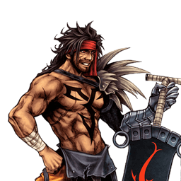

Final Fantasy X
Jecht
Corps à corps à combos chargés : gros dégâts, timings à 3 frames
Vue d'ensemble
Jecht est un personnage de courte portée doté de combos solo innés vers ses HP, de mixups puissants, de dégâts relativement élevés et d'un vrai potentiel de Wall Rush. En chargeant une attaque pendant son startup, il augmente ses dégâts et sa portée, retarde son déclenchement et brise les blocks normaux grâce à la haute priorité. En défense, son Jecht Block unique menace des pokes rapides, couvre ses esquives, empêche la décrue de la jauge d'assist et garde contre les attaques de priorité mid/high dès la frame 1 ; même les projectiles persistants ne lui posent pas problème. Combiné à des braveries impossibles à réagir et à une mobilité standard, tout cela rend Jecht dangereux à affronter de près.
Son jeu centré sur les combos le fait fonctionner avec un large éventail d'assists : ses finishers à fort knockback et ses chemins de combo à embranchements sécurisent un combo assist même loin d'un mur. Côté build, il a l'embarras du choix : combos bravery à dégâts bruts, haute bravery de base aux résultats dévastateurs, et sa capacité à conclure les combos par un HP rend l'accessoire Side by Side extrêmement efficace pour lui — souvent responsable de l'installation de son momentum. Les builds Center of the World orientés EX existent aussi, malgré l'énorme inconvénient de renoncer aux assists.
Cette dépendance aux combos complets a un prix : rater l'une des fenêtres de 3 frames le prive des finishers où il gagne l'essentiel de ses dégâts et de sa déplétion de jauge. Les timings sont plus stricts que la moyenne, ce que la latence en ligne aggrave. Les annulations en cours de combo sont limitées et, faute d'outils de mi-distance, contester les traps de The Emperor est très difficile — c'est notoirement l'un de ses pires matchups. Jecht est aussi vulnérable à certaines interruptions d'assist au démarrage de ses combos, et n'a presque aucun moyen d'éviter sans compromis le stagger du LV2 Assist Change. Ses whiffs, en particulier le Jecht Stream aérien, sont très engageants ; avec une seule bravery offensive au sol comme en l'air, il doit prendre des risques pour continuer à gagner. Sa génération de jauge est sous la moyenne sans les finishers Jecht Beam ou Side by Side, et l'EX offre des rendements décroissants (EX Burst, combos d'EX Revenge et bonus d'EX Mode médiocres).
Historiquement, Jecht a été classé en bas du mid tier avant de remonter en high tier. Son plan de jeu, assez direct, prospère avec le momentum mais souffre quand il faut gérer le désavantage. Le poking aérien est plus risqué que chez d'autres personnages forts, mais Jecht Block est une option défensive post-esquive fantastique et les contres sur LV2 Assist Change lui rapportent un combo complet. Les timings stricts constituent une barrière d'entrée pour les nouveaux joueurs, et punir les fast fallers en esquive demande des ressources — mais quand tout s'aligne, Jecht rivalise avec la majorité du roster.
Tier list 2017 (tournoi, dissidia.wiki) : A+ — 6ᵉ sur 30. Jecht est classé 6e (tier A+) de la tier list 2017. L'overview rappelle qu'il a longtemps stagné en bas du mid tier avant d'être reconnu high tier, capable de rivaliser avec la majorité du roster quand son plan s'exécute.
Forces
- Excellent combat rapproché : mobilité, braveries à haute priorité (chargées) et utilitaires pour tordre les interactions.
- Dégâts énormes : ATK très élevé (112), multiplicateurs de combo bravery et finishers HP — un seul démarreur de combo suffit à infliger de lourds dégâts.
- Jecht Block garde les attaques haute priorité dès la frame 1 : option défensive post-esquive rare et excellente, très rentable sur stagger.
- Punish d'esquive redoutable : bonnes hitbox et startup sur ses braveries, tracking accru pendant les appels d'assist.
- Combos HP solo qui portent l'adversaire jusqu'au mur, pour beaucoup de dégâts et du contrôle d'espace dans les petits stages.
- Synergie d'assist flexible avec potentiel de Wall Rush et suivis bravery rapides ; certains assists peuvent même rattraper ses combos ratés.
- Fonctionne avec une grande variété de builds — utilisateur notoirement fort de Side by Side, Center of the World possible.
- Momentum : un bon hit tôt dans le match lance la machine ; les staggers de LV2 Assist Change donnent un combo complet, et Jecht Beam + Jecht Block permettent de contourner l'EX Revenge final.
Faiblesses
- Moveset limité : plan de jeu et portée effective prévisibles ; le poke aérien principal Jecht Stream a une recovery considérable sur whiff.
- Précision d'exécution : les combos solo exigent plusieurs timings à 3 frames pour infliger le moindre dégât HP — sensibles à l'erreur humaine et fortement compromis en lag.
- Générer de la jauge sur whiff est difficile : une seule bravery offensive au sol et en l'air, et l'essentiel du gain vient des finishers HP.
- Économie d'EX faible : dépendance à Jecht Beam et aux EX Cores, EX Burst légèrement sous la moyenne, bonus Full Combo souvent situationnel.
- Présence affaiblie sans assist : menace bien moindre à longue distance ou sans jauge, et difficulté à remonter un retard de ressources.
- Area denial à base d'imblocables : Black Hole contourne Jecht Block, et les traps de The Emperor limitent ses approches et ses pokes à des HP télégraphiés et à l'assist.
Stats & vitesses
| Nom | Jecht (ジェクト) |
|---|---|
| Jeu d'origine | Final Fantasy X |
| ATK de base (LV100) | 112 (Very High) |
| DEF de base (LV100) | 111 (Average) |
| Vitesse de course | 5 (Above Avg.) |
| Vitesse de dash | 77 (Average / Good) |
| Vitesse de chute | 81 (Average) |
| Chute après esquive | 39 (Average) |
| BRV la plus rapide | 1F (Jecht Block) 13F (Jecht Rush) |
| HP la plus rapide | 31F (Jecht Beam / Ultimate Jecht Shot) |
| HP en 1 coup | Yes (Jecht Beam) |
| HP links | Yes (Combo chains) |
| Command block | Yes (Jecht Block) |
| Armes | Axes Grappling Weapons Greatswords Thrown Weapons |
| Armures | Bangles Chestplates Clothing Hats Headbands Helms Light Armor Shields |
| Armes exclusives | Kaiser Knuckles Sin's Talon Sin's Fang |
| Unlock | PP Catalog DFF save import |
| Camp | Cosmos (012)Chaos (013) |
| Doubleur (JP) | Masuo Amada |
| Doubleur (ENG) | Gregg Berger |
Valeurs brutes du wiki (page personnage) — plus la valeur est basse, plus le personnage est rapide. Trait pointillé or : moyenne des 31 personnages.
Coups
Startup en frames (60 i/s, données dissidia.wiki). Couleur : Melee Low · Melee Mid · Melee High · Ranged.
Braveries
Data comparison
Coup sans nom
| Version | Damage multiplier | Startup frame | Type | Priority | EX Force | Effects | CP (mastered) |
|---|---|---|---|---|---|---|---|
| Ground / Air (Neutral) | 1x4, 6, [19] (+10, 19) | ?? | Physical | Melee Mid | 9 | Wall Rush | - |
| Ground (Up) | 3, 1x5, 2, [19] (+10, 19) | ?? | Physical | Melee Mid | 9 | Wall Rush | |
| Air (Down) | 5, 5, [1x4, 15] (+10, 19) | ?? | Physical | Melee Mid | 9 | Wall Rush |
Coup sans nom Melee Mid
| Dégâts de base | 1x4, 6, [19] (+10, 19) |
|---|---|
| Type | Physical |
| Priorité | Melee Mid |
| EX Force | 9 |
| Effets | Wall Rush |
| Cancels | Dodge (recovery), HP Attack |
Ground (Up) Melee Mid
Le Up 3 de Jecht Rush : lancer d'épée tournoyant vers le haut conclu par une taillade montante, finisher à knockback ascendant qui peut Wall Rush. C'est le seul moyen de combotter en Ultimate Jecht Shot — la récompense vaut l'effort, avec une fenêtre de 5 frames pour placer le HP sur le dernier multi-hit (sur bravery break, marteler HP suffit). Chaîne peu exceptionnelle par ailleurs : Jecht reste statique jusqu'à la taillade, et les Wall Rush au plafond ne sont possibles que dans une poignée de stages. Si l'adversaire anticipe Ultimate Jecht Shot, finir en Jecht Beam au sol évite le whiff punish après Assist Change.
| Dégâts de base | 3, 1x5, 2, [19] (+10, 19) |
|---|---|
| Type | Physical |
| Priorité | Melee Mid |
| EX Force | 9 |
| Effets | Wall Rush |
| Cancels | Dodge (recovery), HP Attack |
Air (Down) Melee Mid
Le Down 3 de Jecht Stream : coups de marteau conclus par un slam tournoyant, finisher à knockback descendant qui peut Wall Rush. Accessible après Jecht Rush Up 2 ou Jecht Stream Neutral 2, c'est son Wall Rush bravery au sol de prédilection : bons dégâts, suivis d'assist presque sans considération d'altitude et pression près du sol. Seul moyen de combotter en Triumphant Grasp, avec une fenêtre de 5 frames sur un deuxième coup clairement télégraphié à l'image et au son — la chaîne la plus simple pour apprendre le personnage. Le knockback est si fort qu'il déclenche une réaction de Wall Rush au sol même en haut d'Order's Sanctuary (sans les dégâts, mais les combos assist restent possibles) ; près d'un mur, les multi-hits peuvent faire tomber le combo, auquel cas le finisher HP est plus sûr.
| Dégâts de base | 5, 5, [1x4, 15] (+10, 19) |
|---|---|
| Type | Physical |
| Priorité | Melee Mid |
| EX Force | 9 |
| Effets | Wall Rush |
| Cancels | Dodge (recovery), HP Attack |
Attaques HP
Data comparison
Coup sans nom
| Version | Damage multiplier | Startup frame | Type | Priority | EX Force | Effects | CP (mastered) |
|---|---|---|---|---|---|---|---|
| Level 1 | 2 x 5 (10) | 41F | Physical | Melee High | 30 | Wall Rush | 30 (15) |
| Level 2 | 1 x 6, 2, 2, 3, 3 (16) | 48F charge, 11F release | Physical | Melee High | 30 | Wall Rush | |
| Level 3 | 1 x 9, 2 x 6 (21) | 64F charge, 11F release | Physical | Melee High | 36 | Wall Rush |
Coup sans nom Melee High
| Dégâts de base | 2 x 5 (10) |
|---|---|
| Startup | 41F |
| Type | Physical |
| Priorité | Melee High |
| EX Force | 30 |
| Effets | Wall Rush |
| Cancels | Dodge (recovery) |
| CP (maîtrisé) | 30 (15) |
Level 2 Melee High
Jecht Blade chargé au niveau 2 : légère hausse des dégâts bravery en combo solo (16 de base, contre 15 pour un Triumphant Grasp niveau 2), mais le timing est plus délicat à cause de la fenêtre d'annulation plus obscure du Neutral 3.
| Dégâts de base | 1 x 6, 2, 2, 3, 3 (16) |
|---|---|
| Startup | 48F (charge),11F (release) |
| Type | Physical |
| Priorité | Melee High |
| EX Force | 30 |
| Effets | Wall Rush |
| Cancels | Dodge (recovery) |
| CP (maîtrisé) | 30 (15) |
Level 3 Melee High
Jecht Blade chargé à fond : sert, comme un Triumphant Grasp niveau 3, à menacer certaines actions avec un tracking renforcé et des hitbox haute priorité. Le tracking vertical de la version aérienne augmente nettement et le startup à la relâche est rapide (11F). Sa portée latérale permet un usage plus libéral contre les adversaires acculés ; le punish d'esquive est possible à la réaction, mais plus on attend, plus l'adversaire peut désamorcer en s'éloignant ou en frappant Jecht pendant la charge. Sur hit brut, il force l'adversaire à dépenser sa jauge ; charger un Jecht Stream niveau 3 reste globalement plus sûr, surtout face à un adversaire en near death.
| Dégâts de base | 1 x 9, 2 x 6 (21) |
|---|---|
| Startup | 64F (charge),11F (release) |
| Type | Physical |
| Priorité | Melee High |
| EX Force | 36 |
| Effets | Wall Rush |
| Cancels | Dodge (recovery) |
| CP (maîtrisé) | 30 (15) |
Jecht Beam Ranged High
HP mono-coup à génération d'EX supérieure à la moyenne (120), combo tool et poke occasionnel qui s'enchaîne depuis le Neutral 3 de Jecht Stream. Tracking sous la moyenne mais longues frames actives et double hit à bout portant : conclure un combo solo par Jecht Beam déclenche systématiquement le double hit, doublant EX et jauge — avec Side by Side, un stagger de LV2 Assist Change peut rapporter plus d'une barre d'assist. Le hit stun suffit pour combotter en assist (mur ou coin généralement requis) ; avec Kuja ou Tidus, Jecht Stream Down 3 combote en Jecht Beam sans mur. En finisher, c'est le choix « jauge » au détriment du Wall Rush : le LV2 Assist Change ne le reflète pas et ne le stagge pas, mais l'immobilité pendant le startup facilite le LV1 Assist Change adverse, d'autant que le timing linéaire des combos de Jecht télégraphie le Beam.
| Dégâts de base | -- |
|---|---|
| Startup | 31F |
| Type | -- |
| Priorité | Ranged High |
| EX Force | 120 |
| Effets | -- |
| Cancels | Dodge |
| CP (maîtrisé) | 30 (15) |
EX Mode: Final Aeon! & EX Burst
L'EX Mode de Jecht, « Final Aeon! », confère Regen, Critical Boost et Full Combo. Full Combo permet de terminer un combo même si le premier coup a raté : en whiffant Jecht Rush ou Jecht Stream puis en activant l'EX Mode, Jecht peut fondre sur l'adversaire avec la deuxième chaîne. Séduisant sur le papier, mais le tracking est faible et seule la 3e chaîne monte de Melee Low à Melee Mid ; Jecht Rush s'en sert particulièrement bien, la 2e chaîne (neutre) traversant l'écran en un clin d'œil ou servant d'anti-air (haut).
Détail notable : un EX Mode ne se désactive pas tant que le personnage est en état d'attaque. Comme Jecht peut charger sans limite de temps, il peut théoriquement rester en EX Mode indéfiniment et régénérer autant de santé qu'il veut — au prix de laisser l'adversaire farmer ses ressources et de s'exposer au whiff punish, car il reste vulnérable pendant la charge. Enfin, sans jauge EX restante, l'EX Mode se désactive après la 3e chaîne : pour garantir un EX Burst, le HP doit déjà être en cours quand la jauge se vide.
EX Burst : Blitz King est un EX Burst au timing : deux inputs à arrêter au centre d'une jauge (fenêtres de 2 puis 1 seconde, deux « Great » pour le Burst parfait). Ses faibles dégâts initiaux et sa longue durée en font l'un des EX Bursts les plus faibles du jeu ; Auto EX Command Ω (20 CP) permet d'ignorer le timing, utile en lag ou dans les rulesets à CP disponibles, sans être une recommandation évidente vu les besoins en CP de Jecht.
Mécanique unique
En maintenant un bouton d'attaque, Jecht charge le coup : la maintenir augmente ses propriétés, la relâcher déclenche l'attaque. Presque tout son kit se charge, à l'exception de Jecht Block et Jecht Beam. La charge est un pilier de son gameplay, surtout sur les braveries : elle sert avant tout à briser les blocks normaux, mais aussi au punish d'esquive et de whiff. En contrepartie, charger rend Jecht plus vulnérable et télégraphié pendant le startup — et prolonge d'ailleurs son EX Mode bien au-delà de sa limite prévue.
Une fois la charge entamée, Jecht DOIT aller au bout de l'attaque, même si elle ne peut pas toucher. Charger Jecht Stream est donc risqué (startup et recovery des deux coups de pied rallongés, vulnérabilité pendant l'approche, plus d'espace d'évasion en l'air pour l'adversaire), alors qu'un Jecht Rush chargé est bien plus sûr : hitbox plus précoce, animation plus courte, annulation plus tôt. Le combat au sol est ainsi plus sûr pour Jecht que le combat aérien — malheureusement, la majorité des interactions de Dissidia Duodecim se jouent en l'air. Les murs et les petits stages jouent en sa faveur. Attention enfin à la durée d'appui : même un maintien léger ralentit l'attaque sans en changer les propriétés.
- Niveau 1 : non chargé, priorité Melee Low, startup le plus rapide (tapoter le bouton).
- Niveau 2 : légèrement chargé, Melee Low, startup plus lent mais portée et dégâts légèrement accrus ; signalé par un grognement différent et des effets discrets.
- Niveau 3 : charge complète, Melee High, startup le plus lent (presque doublé par rapport au niveau 2) mais gains de portée et de dégâts maximaux ; signalé par un effet sonore distinct et une aura majeure.
- Pour les HP, la charge n'apporte que du tracking et des dégâts bravery supplémentaires ; les paliers de priorité ne concernent que Jecht Rush et Jecht Stream.
Plan de jeu & techniques avancées
Le plan de Jecht est simple à énoncer : imposer le corps à corps, toucher une fois, puis convertir en combo complet jusqu'au HP. Ses chaînes Neutral 3 / Up 3 / Down 3 partagent de gros dégâts de base et débouchent sur ses finishers (Jecht Blade, Ultimate Jecht Shot via Up 3, Triumphant Grasp via Down 3, ou Jecht Beam pour la jauge). Le choix du finisher est une décision à part entière : Wall Rush pour les dégâts, Jecht Beam pour l'EX et la déplétion de jauge, ou changement de finisher pour déjouer les whiff punishs après Assist Change.
La charge structure son neutral : briser les blocks avec un niveau 3, punir les esquives et les whiffs, conditionner l'adversaire. Comme s'éloigner de Jecht fait rater la plupart de ses coups, il doit représenter une menace dans des situations qui l'exposent (dashs prolongés, frappes retardées) pour forcer les adversaires défensifs à s'engager à contretemps. En défense, Jecht Block couvre ses esquives, menace des pokes rapides et garde les priorités mid/high dès la frame 1 ; les contres sur LV2 Assist Change rapportent un combo complet.
Côté ressources, Side by Side est souvent le moteur de son momentum : avec le build de référence, le premier combo Wall Rush avec Hero's Seal dépasse 3000 HP et un combo solo à bravery de base tourne autour de 2000 HP, Together as One fournissant la jauge d'assist initiale qui lui évite de devoir s'engager trop tôt. L'assist est sa vraie économie — Kuja en tête pour les dégâts et les suivis — tandis que l'EX reste secondaire (gain faible, Burst médiocre), sauf via les enders Jecht Beam et les EX Cores.
Enfin, le choix de l'input neutre est stratégique et documenté : Jecht Rush en neutre immunise contre les angles de caméra ambigus et aide à toucher les adversaires au sol en mouvement (idem Ultimate Jecht Shot en anti-air), tandis que Jecht Block en neutre rend les blocks sans interstice plus praticables. Des configurations à double input existent pour couvrir les deux, moyennant plus de CP.
Techniques spécifiques
Jecht Rush dodge cancel combo
Combo solo étendu à base de dodge cancels de Jecht Rush, cité comme route de dégâts avec plusieurs assists (Tidus après un Wall Rush au sol de Sonic Buster, Onion Knight, et en boucle avec Ultimecia via Knight's Axe près du mur).
Double Ultimate Jecht Shot (Aerith)
Avec l'assist Aerith, Jecht peut enchaîner trois HP d'affilée au sol : environ 5000-6000 HP de dégâts pour deux barres d'assist avec un build à haute bravery de base. Redoutable dans les matchups qui se jouent au sol.
EX Mode infini par charge
L'EX Mode ne se désactive pas pendant un état d'attaque : en maintenant une charge sans limite de temps, Jecht prolonge son EX Mode (et son Regen) aussi longtemps qu'il le souhaite, au prix d'une grande vulnérabilité.
Gapless Jecht Block
Assigner Jecht Block à l'input neutre rend les Jecht Blocks sans interstice plus praticables et facilite la défense contre les attaques aériennes quel que soit l'angle ; des configurations à double input directionnel existent pour couvrir aussi les cross-ups de caméra.
Contournement de l'EX Revenge final
Grâce à Jecht Beam et Jecht Block, Jecht peut passer outre un dernier EX Revenge adverse, d'après la liste de forces de l'overview.
Techniques universelles (blodge, dash feint, lock off, dodge punishment) : voir la page Techniques & glitches.
Matchups
La page matchups n'est renseignée que pour un seul adversaire : The Emperor, décrit comme le pire matchup de Jecht. Le manque de portée et d'outils pour composer avec Thunder Crest (BRV imblocable) et Dreary Cell (HP) rend toute approche sûre très difficile : Jecht Beam, les whiff punishs avec assist, la réduction active des traps et les dashs pour punir les esquives deviennent essentiels. Le wiki déconseille ce matchup aux joueurs encore en apprentissage.
Pour le reste du roster, la page ne contient qu'une liste de noms sans analyse. L'overview apporte quelques repères indirects : les moves imblocables d'area denial (Black Hole, traps de l'Emperor) contournent Jecht Block et gênent ses approches, et le build Seal of Lufenia est recommandé contre les personnages à forte génération d'EX (Gabranth, Gilgamesh, Prishe, Lightning, Garland, Tidus).
Vidéos de matchs : Replay Theater — matchs de Jecht.
Builds
Jecht fonctionne avec une grande variété de builds : haute bravery de base + Side by Side, bravery boost on dodge, et même le niche Center of the World. Le build Side by Side documenté est le standard compétitif : Piggy's Stick, Chainsaw, Royal Crown, Maximillian (via Equip Glitch : Peltast's Gear, Bard's Gear, Cavalier's Gear, Equip Machines), assist Kuja ou Aerith, invocation Rubicante, et des accessoires combinant déplétion de jauge, mobilité et bravery initiale (Hero's Seal porte la BRV initiale à 2089, Together as One lance la jauge d'assist, Muscle Belt, Sniper Eye, Dismay Shock, BRV = 0, boosters Empty EX Gauge / Pre-EX). L'objectif : frapper fort et vite — plus de 3000 HP sur le premier combo Wall Rush avec Hero's Seal, environ 2000 HP par combo solo à bravery de base, et une récupération de bravery assez rapide pour qu'un Jecht Blade brut fasse des dégâts à bravery de base après un combo Kuja. L'EX est sacrifié puisque Side by Side est équipé ; 5 CP restent pour Auto Assist Lock-On.
Le second build documenté, « Hybrid (Seal of Lufenia) », est un all-rounder à plus forte déplétion d'EX, recommandé contre les personnages à bonne génération d'EX ou dans les matchups longs impliquant l'EX (Gabranth, Gilgamesh, Prishe, Lightning, Garland, Tidus) : set Lufenian avec Piggy's Stick, assist Kuja ou Tidus, Bravery Orb pour améliorer la récupération de bravery, Tenacious Attacker, Hero's Essence (CP max 480) et First to Victory pour le départ.
Côté attaques, presque tout le kit de Jecht est un staple, recommandé quel que soit le matchup. Les flexibles : Jecht Beam au sol (bon HP mono-coup aux frames actives trompeusement longues, complète le poking mais incombotable sans assist) et Jecht Blade au sol (route de combo alternative vers le Wall Rush, occupation d'espace plus rapide que la version aérienne dans les petits stages, mais risqué et jugé non essentiel par certains — ses 15 CP grèvent le reste du build). Le choix de l'input neutre (Jecht Rush ou Jecht Block) fait aussi partie intégrante de la construction.
| Stats | |
|---|---|
| HP | 9376 |
| CP | 450 |
| BRV | 1393 (2089 initial) |
| ATK | 179 |
| DEF | 183 |
| LUK | -- |
| Max Booster | x3.8 |
| Equipment | |
|---|---|
| Assist | Kuja / Aerith |
| Weapon <img></img> | Piggy's Stick <img></img> |
| Hand <img></img> | Chainsaw <img></img> |
| Head <img></img> | Royal Crown <img></img> |
| Body <img></img> | Maximillian <img></img> |
| Accessory 1 | <img></img> Muscle Belt |
| Accessory 2 | <img></img> Sniper Eye |
| Accessory 3 | <img></img> Dismay Shock |
| Accessory 4 | <img></img> BRV = 0 |
| Accessory 5 | <img></img> Empty EX Gauge |
| Accessory 6 | <img></img> Pre-EX Mode |
| Accessory 7 | <img></img> Pre-EX Revenge |
| Accessory 8 | <img></img> Hero's Seal |
| Accessory 9 | <img></img> Together as One |
| Accessory 10 | <img></img> Side by Side |
| Summon <img></img> | Rubicante |
| Bravery attacks | |
|---|---|
| Ground | Aerial |
| <img></img> Jecht Block | <img></img> Jecht Block |
| ↑+<img></img> Jecht Rush | ↑+<img></img> Jecht Stream |
| HP attacks | |
| Ground | Aerial |
| <img></img> Ultimate Jecht Shot | <img></img> Jecht Beam |
| ↑+<img></img> Jecht Beam | ↑+<img></img> Jecht Blade |
| ↓+<img></img> Triumphant Grasp |
Build Overview
Basic Abilities
| Actions |
|---|
| Ground Evasion |
| Midair Evasion |
| Ground Block |
| Midair Block |
| Aerial Recovery |
| Recovery Attack |
| Controlled Recovery |
| Wall Jump |
| Air Dash |
| Free Air Dash |
| Ground Dash |
| Multi Air Slide |
| Free Air Dash Boost |
| Assist Gauge Up Dash |
| Speed Boost++ |
| Jump Times Boost+ |
| Ground Evasion Boost |
| Midair Evasion Boost |
| Evasion Boost |
| Descent Speed Boost |
| Support |
|---|
| Always Target Indicator |
| EX Core Lock On |
| Assist Lock On |
| Extra |
|---|
| Precision Jump |
| Precision Evasion |
| Counterattack |
| Gambler's Spirit |
| Disable Counterattack |
| EXP to Assist |
| CP |
|---|
| 445 / 450 |
CP Allocation
Substitutes
| Equipment / Ability | Substitute | Notes |
|---|---|---|
| Hero's Seal <img></img> | Badge of Trust <img></img> | Trades higher initial bravery for practically 2 assist bars at the beginning of a match. Useful in small stages or against opponents who can quickly establish momentum as well. |
| BRV = 0 <img></img> | Large Gap in HP <img></img> | BRV = 0 has consistent uptime thanks to Jecht's combos, but it doesn't affect Muscle Belt <img></img>. Use Large Gap in HP if you're looking for a small boost to all three basic accessories. |
| Counterattack & Precision Jump | Best Dresser / Master Guardsman | Counterattack is commonly nullified and Precision Jump is not a vital movement option for Jecht. If you're willing to unequip them, Best Dresser increases damage with +100 base BRV. Alternatively, Master Guardsman increases survivability with +1000 max HP. |
Attacks (Staple)
Attacks (Flexible)
Attacks (Avoid)
Hybrid (Seal of Lufenia)
| Stats | |
|---|---|
| HP | 9644 |
| CP | 480 |
| BRV | 1314 |
| ATK | 180 |
| DEF | 181 |
| LUK | -- |
| Max Booster | x3.3 |
| Equipment | |
|---|---|
| Assist | Kuja / Tidus |
| Weapon <img></img> | Piggy's Stick |
| Hand <img></img> | Lufenian Dirk |
| Head <img></img> | Lufenian Hairpin |
| Body <img></img> | Lufenian Jacket |
| Accessory 1 | <img></img> Sniper Eye |
| Accessory 2 | <img></img> Bravery Orb |
| Accessory 3 | <img></img> Battle Hammer |
| Accessory 4 | <img></img> BRV = 0 |
| Accessory 5 | <img></img> Summon Unused |
| Accessory 6 | <img></img> Pre-EX Mode |
| Accessory 7 | <img></img> Pre-EX Revenge |
| Accessory 8 | <img></img> Hero's Essence |
| Accessory 9 | <img></img> Tenacious Attacker |
| Accessory 10 | <img></img> First to Victory |
| Summon <img></img> | Rubicante |
| Bravery attacks | |
|---|---|
| Ground | Aerial |
| <img></img> Jecht Block | <img></img> Jecht Block |
| ↑+<img></img> Jecht Rush | ↑+<img></img> Jecht Stream |
| HP attacks | |
| Ground | Aerial |
| <img></img> Ultimate Jecht Shot | <img></img> Jecht Beam |
| ↑+<img></img> Jecht Beam | ↑+<img></img> Jecht Blade |
| ↓+<img></img> Triumphant Grasp |
Build Overview
Basic Abilities
CP Allocation
Substitutes
| Equipment / Ability | Substitute | Notes |
|---|---|---|
| First to Victory <img></img> | Muscle Belt <img></img> Glutton <img></img> | If the initial boost is not needed, Muscle Belt can add damage. Glutton lets Jecht absorb EX all the time. |
| Hero's Essence <img></img> | BRV = 0 <img></img> Winged Boots <img></img> Dismay Shock <img></img> | BRV = 0 <img></img> for stronger meter depletion, wall rush and base bravery recovery. The BRV recovery is least affected. Winged Boots <img></img> if Jecht needs to deal with Banish Traps. Dismay Shock <img></img> to double down on EX depletion. |
Substitutions documentées : Hero's Seal → Badge of Trust (deux barres d'assist quasi immédiates), BRV = 0 → Large Gap in HP, Counterattack + Precision Jump → Best Dresser (+100 BRV de base) ou Master Guardsman (+1000 HP max) ; pour une variante EX, remplacer Side by Side et Together as One par Tenacious Attacker et/ou Glutton. Sur le build Lufenia : First to Victory → Muscle Belt ou Glutton, Hero's Essence → BRV = 0, Winged Boots (contre les Banish Traps) ou Dismay Shock (déplétion d'EX renforcée).
Synergies d'assist
Jecht en tant qu'assist
Jecht est classé Top tier de la tier list assist (Muggshotter) et fait partie des assists établis de la meta. Il ne fournit pas d'Assist Chase par défaut, mais ses combos maintiennent l'adversaire très longtemps — idéal pour installer des combos au sol ou simplement aligner un HP. Contrairement à Kuja et Sephiroth, Jecht avance pendant ses braveries et se prête mal aux braveries de remplissage répétées ; Jecht Rush (sol, 13F) finit sur le ender Up 3, Jecht Stream (air, 17F) sur le Down 3, ce dernier étant le meilleur pour les fillers grâce à sa vitesse de déplacement plus lente et son hit stun surtout stationnaire près du sol.
Sa particularité rare : des braveries rapides au sol ET en l'air qui débouchent toutes deux sur des suivis fiables, là où beaucoup d'assists ne whiff punissent bien que dans un seul registre. Ses limites : aucune priorité Ranged (le LV2 Assist Change l'arrête de manière fiable) et de longues animations sur hit qui l'exposent aux Assist Locks après un LV1 Assist Change. À noter, une bizarrerie documentée : si Jecht se retrouve dans un coin pendant la deuxième chaîne de Jecht Rush, la chaîne finale ne sort pas et laisse place à un Assist Chase — comportement assez régulier mais surprenant.
Assists recommandées
- Kuja — Conventionnellement son assist le plus fort : gros dégâts bravery, whiff punishs, suivis consistants partout, HP assists pour contourner le LV2 Assist Change ou forcer un HP sur un combo raté ; un Jecht Beam pendant la bravery assist est souvent garanti au mur.
- Tidus — Moins de dégâts bruts mais expertise en whiff punish et en combo au sol : Hop Step contourne le Dreary Cell de l'Emperor, Sonic Buster ouvre le combo complet Jecht Rush dodge cancel, et Slice and Dice rattrape un combo Jecht Stream raté en séquence de chase.
- Aerith — Cure et Holy provoquent l'approche, Seal Evil permet de placer un HP via chase après une chaîne ratée ou de clash favorablement avec Jecht Block / Jecht Stream chargé — et surtout, le double Ultimate Jecht Shot (environ 5000-6000 HP pour deux barres) au sol.
- Sephiroth — Fonctionnellement un « Kuja budget » avec une bravery au sol plus rapide, mais sans HP assist Ranged High. Solide, un peu moyen, viable.
- Yuna — Bravery aérienne insensible au stagger avec knockback descendant : bon choix dans les petits stages (M.S. Prima Vista, Pandaemonium - Top Floor) où Jecht facilite les Wall Rush ; sa priorité Ranged Low et son startup rapide whiff punissent aussi les attaques aériennes.
- Onion Knight — Bravery au sol Ranged Low pour les interceptions et les suivis d'Ultimate Jecht Shot (ouvrant les Jecht Rush dodge cancel combos) ; le HP Comet force un HP si la 3e chaîne échoue.
- Squall — Niche : la bravery au sol Solid Barrel devient le whiff punisher au sol le plus rapide accessible à Jecht, avec un fort potentiel de maintien ; Blasting Zone intercepte et Aerial Circle place un HP malgré un timing de combo raté. Recommandé contre Golbez.
- Ultimecia — Sacrifie les suivis Wall Rush consistants contre des Jecht Rush dodge cancel combos en boucle près du mur via Knight's Axe (qui ne verrouille pas la jauge d'assist puisqu'il touche après sa disparition) ; demande d'investir dans l'ATK et Assist Critical Boost.
- Gilgamesh — Assist de combo sur Wall Rush pour petits stages, parmi les plus gros dégâts bravery bruts avec Excalibur (50/50), en alternative à Yuna mais vulnérable aux staggers du LV2 Assist Change.
- Terra — Dans les petits stages : extension de combo insensible au stagger et interception avec Blizzara aérien ; le HP Meltdown à tête chercheuse impose des situations offensives dans les espaces clos.
Tech communautaire
Jecht assist corner followup
Démonstration vidéo du comportement de l'assist Jecht dans un coin : la chaîne finale de Jecht Rush ne sort pas et laisse place à un Assist Chase.
Sources
- https://dissidia.wiki/Jecht_(Dissidia_012)
- https://dissidia.wiki/Jecht_(Dissidia_012)/Matchups
- https://www.youtube.com/watch?v=8fEBzsbJS58&t=44s
- https://dissidia.wiki/Tier_List_(Dissidia_012)
- https://dissidia.wiki/Tier_List_(Assist)
Limites connues
- Extraction des braveries et des HP très fragmentaire : Jecht Rush, Jecht Stream, Jecht Block, Triumphant Grasp et Ultimate Jecht Shot n'ont pas de fiche individuelle dans les données, et plusieurs entrées de coups (Neutral 3, Jecht Blade niveau 1) sont dépourvues de nom — leurs informations ont été reversées dans le gameplan et les autres sections.
- Section combos non documentée : la page de combos dédiée mentionnée par le wiki n'est pas extraite.
- Matchups : seul The Emperor est rédigé ; le reste de la page n'est qu'une liste de noms sans analyse.
- Builds : la page principale « Jecht (012) Builds » n'est pas extraite ; seuls deux builds (Side by Side et Hybrid Seal of Lufenia) figurent dans les données, et certaines sous-sections (Basic Abilities et CP Allocation du build Lufenia) sont vides.
- Champ assist gain des coups non renseigné ; startups absents sur les chaînes de combo extraites.
- Le build Center of the World est cité mais jamais détaillé dans les sources.